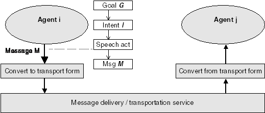

FOUNDATION FOR INTELLIGENT PHYSICAL AGENTS
FIPA Communicative Act Library Specification
|
Document title |
FIPA Communicative Act Library Specification |
||
|
Document number |
SC00037J |
Document source |
FIPA TC Communication |
|
Document status |
Standard |
Date of this status |
2002/12/03 |
|
Supersedes |
FIPA00003, FIPA00038, FIPA00039, FIPA00040, FIPA00041, FIPA00042, FIPA00043, FIPA00044, FIPA00045, FIPA00046, FIPA00047, FIPA00048, FIPA00049, FIPA00050, FIPA00051, FIPA00052, FIPA00053, FIPA00054, FIPA00055, FIPA00056, FIPA00057, FIPA00058, FIPA00059, FIPA00060 |
||
|
Contact |
fab@fipa.org |
||
|
Change history |
See Informative Annex B — ChangeLog |
||
©
1996-2002 Foundation for Intelligent Physical Agents
http://www.fipa.org/
Geneva, Switzerland
|
Notice |
|
Use of the technologies described in this specification may infringe patents, copyrights or other intellectual property rights of FIPA Members and non-members. Nothing in this specification should be construed as granting permission to use any of the technologies described. Anyone planning to make use of technology covered by the intellectual property rights of others should first obtain permission from the holder(s) of the rights. FIPA strongly encourages anyone implementing any part of this specification to determine first whether part(s) sought to be implemented are covered by the intellectual property of others, and, if so, to obtain appropriate licenses or other permission from the holder(s) of such intellectual property prior to implementation. This specification is subject to change without notice. Neither FIPA nor any of its Members accept any responsibility whatsoever for damages or liability, direct or consequential, which may result from the use of this specification. |
Foreword
The Foundation for Intelligent Physical Agents (FIPA) is an international organization that is dedicated to promoting the industry of intelligent agents by openly developing specifications supporting interoperability among agents and agent-based applications. This occurs through open collaboration among its member organizations, which are companies and universities that are active in the field of agents. FIPA makes the results of its activities available to all interested parties and intends to contribute its results to the appropriate formal standards bodies where appropriate.
The members of FIPA are individually and collectively committed to open competition in the development of agent-based applications, services and equipment. Membership in FIPA is open to any corporation and individual firm, partnership, governmental body or international organization without restriction. In particular, members are not bound to implement or use specific agent-based standards, recommendations and FIPA specifications by virtue of their participation in FIPA.
The FIPA specifications are developed through direct involvement of the FIPA membership. The status of a specification can be either Preliminary, Experimental, Standard, Deprecated or Obsolete. More detail about the process of specification may be found in the FIPA Document Policy [f-out-00000] and the FIPA Specifications Policy [f-out-00003]. A complete overview of the FIPA specifications and their current status may be found on the FIPA Web site.
FIPA is a non-profit association registered in Geneva, Switzerland. As of June 2002, the 56 members of FIPA represented many countries worldwide. Further information about FIPA as an organization, membership information, FIPA specifications and upcoming meetings may be found on the FIPA Web site at http://www.fipa.org/.
Contents
2.1 Status of a FIPA-Compliant Communicative Act
5 Informative Annex A — Formal Basis of ACL Semantics
5.1 Introduction to the Formal Model
5.2.1 Basis of the Semantic Language Formalism
5.3.7 Note on the Use of Symbols in Formulae
5.4 Primitive Communicative Acts
5.4.3 Confirming an Uncertain Proposition: Confirm..
5.4.4 Contradicting Knowledge: Disconfirm
5.5 Composite Communicative Acts
5.5.1 The Closed Question Case
5.5.3 The Confirm/Disconfirm Question Act
5.6 Inter-Agent Communication Plans
6 Informative Annex B — ChangeLog
This document contains deals with structuring the FIPA Communicative Act Library (CAL). It contains specifications for:
· Defining the structure of the CAL.
· Defines the formal basis of FIPA ACL semantics for the semantic characterization of each FIPA communicative act.
This document specifies the FIPA CAL. The objectives of standardizing and defining a library of FIPA compliant communicative acts are:
· To help ensure interoperability by providing a standard set of composite and macro communicative acts, derived from the FIPA primitive communicative acts,
· To facilitate the reuse of composite and macro communicative acts, and,
· To provide a well-defined process for maintaining a set of communicative acts and act labels for use in the FIPA ACL.
The definition of a communicative act belonging to the CAL is normative. That is, if a given agent implements one of the acts in the CAL, then it must implement that act in accordance with the semantic definition in the CAL. However, FIPA-compliant agents are not required to implement any of the CAL languages, except the not-understood composite act.
By collecting communicative act definitions in a single, publicly accessible registry, the CAL facilitates the use of standardized communicative acts by agents developed in different contexts. It also provides a greater incentive to developers to make any privately developed communicative acts generally available.
The name assigned to a proposed communicative act must uniquely identify which communicative act is used within a FIPA ACL message. It must not conflict with any names currently in the library, and must be an English word or abbreviation that is suggestive of the semantics.
FIPA is responsible for maintaining a consistent list of approved and proposed communicative act names and for making this list publicly available to FIPA members and non-members. This list is derived from the FIPA CAL.
In addition to the semantic characterization and descriptive information that is required, each communicative act in the CAL may specify additional information, such as stability information, versioning, contact information, different support levels, etc.
|
Summary |
The action of accepting a previously submitted proposal to perform an action. |
|
Message Content |
A tuple consisting of an action expression denoting the action to be done, and a proposition giving the conditions of the agreement. |
|
Description |
accept-proposal is a general-purpose acceptance of a proposal that was previously submitted (typically through a propose act). The agent sending the acceptance informs the receiver that it intends that (at some point in the future) the receiving agent will perform the action, once the given precondition is, or becomes, true.
The proposition given as part of the acceptance indicates the preconditions that the agent is attaching to the acceptance. A typical use of this is to finalize the details of a deal in some protocol. For example, a previous offer to “hold a meeting anytime on Tuesday” might be accepted with an additional condition that the time of the meeting is 11.00.
Note for future extension: an agent may intend that an action become done without necessarily intending the precondition. For example, during negotiation about a given task, the negotiating parties may not unequivocally intend their opening bids: agent a may bid a price p as a precondition, but be prepared to accept price p'. |
|
Formal Model |
<i, accept-proposal (j, <j, act>, f))> º <i, inform (j, Ii Done (<j, act>, f))> FP: Bi a Ù ØBi (Bifj a Ú Uifj a) RE: Bj a
Where:
a = Ii Done (<j, act>, f) |
|
Example |
Agent i informs j that it accepts an offer from j to stream a given multimedia title to channel 19 when the customer is ready. Agent i will inform j of this fact when appropriate.
(accept-proposal :sender (agent-identifier :name i) :receiver (set (agent-identifier :name j)) :in-reply-to bid089 :content "((action (agent-identifier :name j) (stream-content movie1234 19)) (B (agent-identifier :name j) (ready customer78)))" :language fipa-sl) |
|
Summary |
The action of agreeing to perform some action, possibly in the future. |
|
Message Content |
A tuple, consisting of an action expression denoting the action to be done, and a proposition giving the conditions of the agreement. |
|
Description |
agree is a general-purpose agreement to a previously submitted request to perform some action. The agent sending the agreement informs the receiver that it does intend to perform the action, but not until the given precondition is true.
The proposition given as part of the agree act indicates the qualifiers, if any, that the agent is attaching to the agreement. This might be used, for example, to inform the receiver when the agent will execute the action which it is agreeing to perform.
Pragmatic note: The precondition on the action being agreed to can include the perlocutionary effect of some other CA, such as an inform act. When the recipient of the agreement (for example, a contract manager) wants the agreed action to be performed, it should then bring about the precondition by performing the necessary CA. This mechanism can be used to ensure that the contractor defers performing the action until the manager is ready for the action to be done. |
|
Formal Model |
<i, agree (j, <i, act>, f))> º <i, inform (j, Ii Done (<i, act>, f))> FP: Bi a Ù ØBi (Bifj a Ú Uifj a) RE: Bj a
Where: a = Ii Done(<i, act>, f)
Note that the formal difference between the semantics of agree and the semantics of accept-proposal rests on which agent is performing the action. |
|
Example |
Agent i requests j to deliver a box to a certain location; j answers that it agrees to the request but it has low priority.
(request :sender (agent-identifier :name i) :receiver (set (agent-identifier :name j)) :content "((action (agent-identifier :name j) (deliver box017 (loc 12 19))))" :protocol fipa-request :language fipa-sl :reply-with order567)
(agree :sender (agent-identifier :name j) :receiver (set (agent-identifier :name i)) :content "((action (agent-identifier :name j) (deliver box017 (loc 12 19))) (priority order567 low))" :in-reply-to order567 :protocol fipa-request :language fipa-sl) |
|
Summary |
The action of one agent informing another agent that the first agent no longer has the intention that the second agent performs some action. |
|
Message Content |
An action expression denoting the action that is no longer intended. |
|
Description |
cancel allows an agent i to inform another agent j that i no longer intends that j perform a previously requested action. This is not the same as i informing j that i intends that j not perform the action or stop performing an action. cancel is simply used to let an agent know that another agent no longer has a particular intention. (In order for i to stop j from performing an action, i should request that j stop that action. Of course, nothing in the ACL semantics guarantees that j will actually stop performing the action; j is free to ignore I’s request.) Finally, note that the action that is the object of the act of cancellation should be believed by the sender to be ongoing or to be planned but not yet executed. |
|
Formal Model |
<i, cancel (j, a)> º[1] <i, disconfirm (j, Ii Done (a))> FP: ØIi Done (a) Ù Bi (Bj Ii Done (a) Ú Uj Ii Done (a)) RE: Bj ØIi Done (a)
cancel applies to any form of request action. Suppose an agent i has requested an agent j to perform some action a, possibly if some condition holds. This request has the effect of i informing j that i has an intention that j perform the action a. When i comes to drop its intention, it can inform j that it no longer has this intention with a disconfirm. |
|
Example |
Agent j asks i to cancel a previous request-whenever act by quoting the action.
(cancel :sender (agent-identifier :name j) :receiver (set (agent-identifier :name i)) :content "((action (agent-identifier :name j) (request-whenever :sender (agent-identifier :name j) :receiver (set(agent-identifier :name i)) :content[2] \"((action (agent-identifier :name i) (inform-ref :sender (agent-identifier :name i) :receiver (set (agent-identifier :name j)) :content[3] \"((iota ?x (=(price widget) ?x))\") (> (price widget) 50))" …)))" :langage fipa-sl …) |
|
Summary |
The action of calling for proposals to perform a given action. |
|
Message Content |
A tuple containing an action expression denoting the action to be done, and a referential expression defining a single-parameter proposition which gives the preconditions on the action. |
|
Description |
cfp is a general-purpose action to initiate a negotiation process by making a call for proposals to perform the given action. The actual protocol under which the negotiation process is established is known either by prior agreement or is explicitly stated in the protocol parameter of the message.
In normal usage, the agent responding to a cfp should answer with a proposition giving the value of the parameter in the original precondition expression (see the statement of rational effect for cfp). For example, the cfp might seek proposals for a journey from Frankfurt to Munich, with a condition that the mode of travel is by train. A compatible proposal in reply would be for the 10.45 express train. An incompatible proposal would be to travel by airplane.
Note that cfp can also be used to simply check the availability of an agent to perform some action. Also note that this formalization of cfp is restricted to the common case of proposals characterized by a single parameter (x) in the proposal expression. Other scenarios might involve multiple proposal parameters, demand curves, free-form responses, and so forth. |
|
Formal Model |
<i, cfp (j, <j, act>, Ref x f(x))> º <i, query-ref (j, Ref x (Ii Done (<j, act>, f(x)) Þ (Ij Done (<j, act>, f(x))))> FP: ØBrefi(Ref x a(x)) Ù ØUrefi(Ref x a(x)) Ù ØBi Ij Done (<j, inform-ref (i, Ref x a(x))>) RE: Done (<j, inform (i, Ref x a(x) = r1)> | … | <j, inform (i, Ref x a(x) = rk)>)
Where:
a(x) = Ii Done (<j, act>, f(x)) Þ Ij Done (<j, act>, f(x))
Agent i asks agent j: “What is the ‘x’ such that you will perform action ‘act’ when ‘f (x)’ holds?”
Note: Ref x d(x) is one of the referential expressions: ix d(x), any x d(x) or all x d(x).
Note: The rational effect of this is not a proposal by the recipient. Rather, it is the value of the proposal parameter. See the example in the definition of the propose act. |
|
Example |
Agent j asks i to submit its proposal to sell 50 boxes of plums.
(cfp :sender (agent-identifier :name j) :receiver (set (agent-identifier :name i)) :content "((action (agent-identifier :name i) (sell plum 50)) (any ?x (and (= (price plum) ?x) (< ?x 10))))" :ontology fruit-market :language fipa-sl) |
|
Summary |
The sender informs the receiver that a given proposition is true, where the receiver is known to be uncertain about the proposition. |
|
Message Content |
A proposition. |
|
Description |
confirm indicates that the sending agent:
· believes that some proposition is true,
· intends that the receiving agent also comes to believe that the proposition is true, and,
· believes that the receiver is uncertain of the truth of the proposition. The first two properties defined above are straightforward: the sending agent is sincere[4], and has (somehow) generated the intention that the receiver should know the proposition (perhaps it has been asked). The last pre-condition determines when the agent should use confirm vs. inform vs. disconfirm: confirm is used precisely when the other agent is already known to be uncertain about the proposition (rather than uncertain about the negation of the proposition). From the receiver's viewpoint, receiving a confirm message entitles it to believe that:
· the sender believes the proposition that is the content of the message, and,
· the sender wishes the receiver to believe that proposition also.
Whether or not the receiver does, indeed, change its mental attitude to one of belief in the proposition will be a function of the receiver's trust in the sincerity and reliability of the sender. |
|
Formal Model |
<i, confirm (j, f)> FP: Bif Ù BiUjf RE: Bjf |
|
Examples |
Agent i confirms to agent j that it is, in fact, true that it is snowing today.
(confirm :sender (agent-identifier :name i) :receiver (set (agent-identifier :name j)) :content "weather (today, snowing)" :language Prolog) |
|
Summary |
The sender informs the receiver that a given proposition is false, where the receiver is known to believe, or believe it likely that, the proposition is true. |
|
Message Content |
A proposition. |
|
Description |
disconfirm indicates that the sending agent:
· believes that some proposition is false,
· intends that the receiving agent also comes to believe that the proposition is false, and,
· believes that the receiver either believes the proposition, or is uncertain of the proposition.
The first two properties defined above are straightforward: the sending agent is sincere4, and has (somehow) generated the intention that the receiver should know the proposition (perhaps it has been asked).
The last pre-condition determines when the agent should use confirm vs. inform vs. disconfirm: disconfirm is used precisely when the other agent is already known to believe the proposition or to be uncertain about it.
From the receiver's viewpoint, receiving a disconfirm message entitles it to believe that:
· the sender believes that the proposition that is the content of the message is false, and,
· the sender wishes the receiver to believe the negated proposition also.
Whether or not the receiver does, indeed, change its mental attitude to one of disbelief in the proposition will be a function of the receiver's trust in the sincerity and reliability of the sender. |
|
Formal Model |
<i, disconfirm (j, f)> FP: BiØf Ù Bi(Ujf Ú Bjf) RE: BjØf |
|
Example |
Agent i, believing that agent j thinks that a shark is a mammal and attempts to change j’s belief.
(disconfirm :sender (agent-identifier :name i) :receiver (set (agent-identifier :name j)) :content "((mammal shark))" :language fipa-sl) |
|
Summary |
The action of telling another agent that an action was attempted but the attempt failed. |
|
Message Content |
A tuple, consisting of an action expression and a proposition giving the reason for the failure. |
|
Description |
failure is an abbreviation for informing that an act was considered feasible by the sender, but was not completed for some given reason.
The agent receiving a failure act is entitled to believe that:
· the action has not been done, and,
· the action is (or, at the time the agent attempted to perform the action, was) feasible
The (causal) reason for the failure is represented by the proposition, which is the second element of the message content tuple. It may be the constant true. Often it is the case that there is little either agent can do to further the attempt to perform the action. |
|
Formal Model |
<i, failure (j, a, f)> º <i, inform (j, ($e) Single (e) Ù Done (e, Feasible (a) Ù Ii Done (a)) Ù f Ù ØDone (a) Ù ØIi Done (a))> FP: Bi a Ù ØBi (Bifj a Ú Uifj a) RE: Bj a
Where:
a = ($e) Single (e) Ù Done (e, Feasible (a) Ù Ii Done (a)) Ù f Ù ØDone (a) Ù ØIi Done (a)
Agent i informs agent j that, in the past, i had the intention to do action a and a was feasible. i performed the action of attempting to do a (that is, the action/event e is the attempt to do a), but now a has not been done and i no longer has the intention to do a, and f is true.
The informal implication is that f is the reason that the action failed, though this causality is not expressed formally in the semantic model. |
|
Example |
Agent j informs i that it has failed to open a file.
(failure :sender (agent-identifier :name j) :receiver (set (agent-identifier :name i)) :content "((action (agent-identifier :name j) (open \"foo.txt\")) (error-message \"No such file: foo.txt\"))" :language fipa-sl) |
|
Summary |
The sender informs the receiver that a given proposition is true. |
|
Message Content |
A proposition. |
|
Description |
inform indicates that the sending agent:
· holds that some proposition is true,
· intends that the receiving agent also comes to believe that the proposition is true, and,
· does not already believe that the receiver has any knowledge of the truth of the proposition.
The first two properties defined above are straightforward: the sending agent is sincere, and has (somehow) generated the intention that the receiver should know the proposition (perhaps it has been asked).
The last property is concerned with the semantic soundness of the act. If an agent knows already that some state of the world holds (that the receiver knows proposition p), it cannot rationally adopt an intention to bring about that state of the world, that is, that the receiver comes to know p as a result of the inform act. Note that the property is not as strong as it perhaps appears. The sender is not required to establish whether the receiver knows p. It is only the case that, in the case that the sender already happens to know about the state of the receiver’s beliefs; it should not adopt an intention to tell the receiver something it already knows.
From the receiver’s viewpoint, receiving an inform message entitles it to believe that:
· the sender believes the proposition that is the content of the message, and,
· the sender wishes the receiver to believe that proposition also.
Whether or not the receiver does, indeed, adopt belief in the proposition will be a function of the receiver's trust in the sincerity and reliability of the sender. |
|
Formal Model |
<i, inform (j, f )> FP: Bif Ù Ø Bi(Bifjf Ú Uifjf) RE: Bjf |
|
Examples |
Agent i informs agent j that (it is true that) it is raining today.
(inform :sender (agent-identifier :name i) :receiver (set (agent-identifier :name j)) :content "weather (today, raining)" :language Prolog) |
|
Summary |
A macro action for the agent of the action to inform the recipient whether or not a proposition is true. |
|
Message Content |
A proposition. |
|
Description |
The inform-if macro act is an abbreviation for informing whether or not a given proposition is believed. The agent which enacts an inform-if macro-act will actually perform a standard inform act. The content of the inform act will depend on the informing agent’s beliefs. To inform-if on some closed proposition f:
· if the agent believes the proposition, it will inform the other agent that f, and,
· if it believes the negation of the proposition, it informs that f is false, that is, Øf.
Under other circumstances, it may not be possible for the agent to perform this plan. For example, if it has no knowledge of f, or will not permit the other party to know (that it believes) f, it will send a refuse message.
Notice that communicative acts can be directly performed, can be planned by an agent and can be requested of one agent by another. However, macro acts can be planned and requested, but not directly performed. |
|
Formal Model |
<i, inform-if (j, f)> º <i, inform (j, f)>|<i, inform (j, Øf)> FP: Bifi f Ù ØBi (Bifj f Ú Uifj f) RE: Bifj f
inform-if represents two possible courses of action: i informs j that f, or i informs j that not f. |
|
Examples |
Agent i requests j to inform it whether Lannion is in Normandy.
(request :sender (agent-identifier :name i) :receiver (set (agent-identifier :name j)) :content "((action (agent-identifier :name j) (inform-if :sender (agent-identifier :name j) :receiver (set (agent-identifier :name i)) :content \"in( lannion, normandy)\" :language Prolog)))" :language fipa-sl)
Agent j replies that it is not.
(inform :sender (agent-identifier :name j) :receiver (set (agent-identifier :name i)) :content "\+ in (lannion, normandy)" :language Prolog) |
|
Summary |
A macro action for sender to inform the receiver the object which corresponds to a descriptor, for example, a name. |
|
Message Content |
An object description (a referential expression). |
|
Description |
The inform-ref macro action allows the sender to inform the receiver some object that the sender believes corresponds to a descriptor, such as a name or other identifying description.
inform-ref is a macro action, since it corresponds to a (possibly infinite) disjunction of inform acts, each of which informs the receiver that “the object corresponding to name is x” for some given x. For example, an agent can plan an inform-ref of the current time to agent j, and then perform the act “inform j that the time is 10:45”.
The agent performing the act should believe that the object or set of objects corresponding to the reference expression is the one supplied, and should not believe that the receiver of the act already knows which object or set of objects corresponds to the reference expression. The agent may elect to send a refuse message if it is unable to establish the preconditions of the act.
Notice that communicative acts can be directly performed, can be planned by an agent and can be requested of one agent by another. However, macro acts can be planned and requested, but not directly performed. |
|
Formal Model |
<i, inform-ref (j, Ref x d(x))> º <i, inform (j, Ref x d(x) = r1)> | ... | (<i, inform (j, Ref x d(x) = rk)> FP: Brefi Ref x d(x) Ù ØBi(Brefj Ref x d(x) Ú Urefj Ref x d(x)) RE: Brefj Ref x d(x)
Note: Ref x d(x) is one of the referential expressions: ix d(x), any x d(x) or all x d(x).
inform-ref represents an unbounded, possibly infinite set of possible courses of action, in which i informs j of the referent of x. |
|
Example |
Agent i requests j to tell it the current Prime Minister of the United Kingdom.
(request :sender (agent-identifier :name i) :receiver (set (agent-identifier :name j)) :content "((action (agent-identifier :name j) (inform-ref :sender (agent-identifier :name j) :receiver (set (agent-identifier :name i)) :content \"((iota ?x (UKPrimeMinister ?x)))\" :ontology world-politics :language fipa-sl)))" :reply-with query0 :language fipa-sl)
Agent j replies that Tony Blair is the current Prime Minister of the United Kingdom.
(inform :sender (agent-identifier :name j) :receiver (set (agent-identifier :name i)) :content "((= (iota ?x (UKPrimeMinister ?x)) \"Tony Blair\"))" :ontology world-politics :in-reply-to query0)
Note that a standard abbreviation for the request of inform-ref used in this example is the act query-ref. |
|
Summary |
The sender of the act (for example, i) informs the receiver (for example, j) that it perceived that j performed some action, but that i did not understand what j just did. A particular common case is that i tells j that i did not understand the message that j has just sent to i. |
|
Message Content |
A tuple consisting of an action or event, for example, a communicative act, and an explanatory reason. |
|
Description |
The sender of the not-understood communicative act received a communicative act that it did not understand. There may be several reasons for this: the agent may not have been designed to process a certain act or class of acts, or it may have been expecting a different message. For example, it may have been strictly following a pre-defined protocol, in which the possible message sequences are predetermined. The not-understood message indicates to that the sender of the original, that is, misunderstood, action that nothing has been done as a result of the message. This act may also be used in the general case for i to inform j that it has not understood j’s action.
The second element of the message content tuple is a proposition representing the reason for the failure to understand. There is no guarantee that the reason is represented in a way that the receiving agent will understand. However, a co-operative agent will attempt to explain the misunderstanding constructively.
Note: It is not possible to fully capture the intended semantics of an action not being understood by another agent. The characterization below captures that an event happened and that the recipient of the not-understood message was the agent of that event.
f must be a well formed formula of the content language of the sender agent. If the sender uses the bare textual message, that is, string in the syntax definition, as the reason f, it must be a propositional assertive statement and (at least) the sender can understand that (natural language) message and calculate its truth value, that is, decide its assertion is true or false. So, for example, in the SL language, to use textual message for the convenience of humans, it must be encapsulated as the constant argument of a predicate defined in the ontology that the sender uses, for example:
(error "message") |
|
Formal Model |
<i, not-understood(j, a, f)> º <i, inform( j, a) > FP: Bi a Ù ØBi (Bifj a Ú Uifj a) RE: Bj a
Where:
a = f Ù ($x) Bi ((ie Done (e) Ù Agent (e, j) Ù Bj(Done (e) Ù Agent (e, j) Ù (a = e))) = x) |
|
Examples |
Agent i did not understand a query-if message because it did not recognize the ontology.
(not-understood :sender (agent-identifier :name i) :receiver (set (agent-identifier :name j)) :content "((action (agent-identifier :name j) (query-if :sender (agent-identifier :name j) :receiver (set (agent-identifier :name i)) :content \"<fipa-ccl content expression>\" :ontology www :language fipa-ccl)) (unknown (ontology \"www\")))" :language fipa-sl) |
|
Summary |
The sender intends that the receiver treat the embedded message as sent directly to the receiver, and wants the receiver to identify the agents denoted by the given descriptor and send the received propagate message to them. |
|
Message Content |
A tuple of a descriptor, that is, a referential expression, denoting an agent or agents to be forwarded the propagate message, an embedded ACL communicative act, that is, an ACL message, performed by the sender to the receiver of the propagate message and a constraint condition for propagation, for example, a timeout. |
|
Description |
This is a compound action of the following two actions:
· The sending agent requests the recipient to treat the embedded message in the received propagate message as if it is directly sent from the sender, that is, as if the sender performed the embedded communicative act directly to the receiver.
· The sender wants the receiver to identify agents denoted by the given descriptor and to send a modified version of the received propagate message to them, as described below.
On forwarding, the receiver parameter of the forwarded propagate message is set to the denoted agent(s) and the sender parameter is set to the receiver of the received propagate message. The sender and receiver of the embedded communicative act of the forwarded propagate message is also set to the same agent as the forwarded propagate message’s sender and receiver, respectively.
This communicative act is designed for delivering messages through federated agents by creating a chain (or tree) of propagate messages. An example of this is instantaneous brokerage requests using a proxy message, or persistent requests by a request-when/request-whenever message embedding a proxy message. |
|
Formal Model |
<i, propagate (j, Ref x d(x), <i, cact>, f)> º <i, cact(j)>; <i, inform (j, Ii(($y) (Bj (Ref x d(x) = y) Ù Done (<j, propagate (y, Ref x d(x), <j, cact>, f)>, Bj f))))> FP: FP (cact) Ù Bi a Ù ØBi (Bifj a Ú Uifj a) RE: Done (cact) Ù Bj a
Where :
a= Ii(($y) (Bj (Ref x d(x) = y) Ù Done (<j, propagate (y, Ref x d(x), <j, cact>, f)>, Bj f)))
Agent i performs the embedded communicative act to j: <i, cact(j)> and i wants j to send the propagate message to the denoted agent(s) by Ref x d(x). Note that <i,cact> in the propagate message is the ACL communicative act without the receiver parameter.
Note: Ref x d(x) is one of the referential expressions: ix d(x), any x d(x) or all x d(x). |
|
Example |
Agent i requests agent j and its federating other brokerage agents to do brokering video-on-demand server agent to get “SF” programs.
(propagate :sender (agent-identifier :name i) :receiver (set (agent-identifier :name j)) :content "((any ?x (registered (agent-description :name ?x :services (set (service-description :name agent-brokerage)))) (action (agent-identifier :name i) (proxy :sender (agent-identifier :name i) :receiver (set (agent-identifier :name j)) :content \"((all ?y (registered (agent-description :name ?y :services (set (service-description :name video-on-demand))))) (action (agent-identifier :name j) (request :sender (agent-identifier :name j) :content \"((action ?z[5] (send-program (category "SF"))))\" :ontology vod-server-ontology :protocol fipa-reqest …)) true)\" :ontology brokerage-agent-ontology :conversation-id vod-brokering-2 :protocol fipa-brokering …)) (< (hop-count) 5))" :ontology brokerage-agent-ontology …) |
|
Summary |
The action of submitting a proposal to perform a certain action, given certain preconditions. |
|
Message Content |
A tuple containing an action description, representing the action that the sender is proposing to perform, and a proposition representing the preconditions on the performance of the action. |
|
Description |
propose is a general-purpose act to make a proposal or respond to an existing proposal during a negotiation process by proposing to perform a given action subject to certain conditions being true. The actual protocol under which the negotiation process is being conducted is known either by prior agreement, or is explicitly stated in the protocol parameter of the message.
The proposer (the sender of the propose) informs the receiver that the proposer will adopt the intention to perform the action once the given precondition is met, and the receiver notifies the proposer of the receiver’s intention that the proposer performs the action.
A typical use of the condition attached to the proposal is to specify the price of a bid in an auctioning or negotiation protocol. |
|
Formal Model |
<i, propose (j, <i, act>, f)> º <i, inform (j, Ij Done (<i, act>, f) Þ Ii Done (<i, act>, f))> FP: Bi a Ù ØBi (Bifj a Ú Uifj a) RE: Bj a
Where:
a = Ij Done (<i, act>, f) Þ Ii Done (<i, act>, f)
Agent i informs j that, once j informs i that j has adopted the intention for i to perform action act, and the preconditions for i performing act have been established, i will adopt the intention to perform the communicative act. |
|
Example |
Agent j proposes to i to sell 50 boxes of plums for $5 (this example continues the example of cfp).
(propose :sender (agent-identifier :name j) :receiver (set (agent-identifier :name i)) :content "((action j (sell plum 50)) (= (any ?x (and (= (price plum) ?x) (< ?x 10))) 5)" :ontology fruit-market :in-reply-to proposal2 :language fipa-sl) |
|
Summary |
The sender wants the receiver to select target agents denoted by a given description and to send an embedded message to them. |
|
Message Content |
A tuple of a descriptor, that is, a referential expression, that denotes the target agents, an ACL communicative act, that is, an ACL message, to be performed to the agents, and a constraint condition for performing the embedded communicative act, for example, the maximum number of agents to be forwarded, etc. |
|
Description |
The sending agent informs the recipient that the sender wants the receiver to identify agents that satisfy the given descriptor and to perform the embedded communicative act to them, that is, the receiver sends the embedded message to them.
On performing the embedded communicative act, the receiver parameter is set to the denoted agent and the sender is set to the receiver of the proxy message. If the embedded communicative act contains a reply-to parameter, for example, in the recruiting case where the protocol parameter is set to fipa-recruiting, then it should be preserved in the performed message.
In the case of a brokering request (that is, the protocol parameter is set to fipa-brokering), the brokerage agent (the receiver of the proxy message) must record some parameters, for example, conversation-id, reply-with, sender, etc.) of the received proxy message to forward back the reply message(s) from the target agents to the corresponding requester agent (the sender of the proxy message). |
|
Formal Model |
<i, proxy (j, Ref x d(x), <j, cact>, f)> º <i, inform (j, Ii(($y)(Bj (Ref x d(x) = y) Ù Done (<j, cact(y)>, Bj f))))> FP: Bi a Ù ØBi (Bifj a Ú Uifj a) RE: Bj a
Where:
a= Ii(($y) (Bj (Ref x d(x) = y) Ù Done (<j, cact(y)>, Bj f)))
Agent i wants j to perform the embedded communicative act to the denoted agent(s) (y) by Ref x d(x). Note that <j,cact> in the proxy message is the ACL communicative act without the receiver parameter. Its receiver is denoted by the given Ref x d(x) by the agent j.
Note: Ref x d(x) is one of the referential expressions: ix d(x), any x d(x) or all x d(x).
Two types of proxy can be distinguished:
· We will call the type of proxy defined above strong, because it is a feasibility precondition of j’s communicative act to y that j satisfies the feasibility preconditions of the proxied communicative act. So, if i proxies an inform of the proposition y to y via j, j must believe y before it sends the proxied inform message to y.
· In addition, we could define weak proxying, where we do not suppose that j is required to believe y. In this case, j cannot directly inform y of y, because j does not satisfy the feasibility preconditions of inform. In this case, j can only inform y that the original sender i has the intention that the inform of y should happen. More generally, weak proxying can be expressed as an instance of proxy where the action <j,cact(y)> is replaced by <j, inform(y, Ii Done (<i, cact(y)>))>. |
|
Example |
Agent i requests agent j to do recruiting and request a video-on-demand server to send “SF” programs.
:sender (agent-identifier :name i) :receiver (set (agent-identifier :name j)) :content "((all ?x (registered(agent-description :name ?x :services (set (service-description :name video-on-demand))))) (action (agent-identifier :name j) (request :sender (agent-identifier :name j) :content \"((action ?y[6] (send-program (category \"SF\"))))\" :ontology vod-server-ontology :language FIPA-SL :protocol fipa-request :reply-to (set (agent-identifier :name i)) :conversation-id request-vod-1) true)" :language fipa-sl :ontology brokerage-agent :protocol fipa-recruiting :conversation-id vod-brokering-1 …) |
|
Summary |
The action of asking another agent whether or not a given proposition is true. |
|
Message Content |
A proposition. |
|
Description |
query-if is the act of asking another agent whether (it believes that) a given proposition is true. The sending agent is requesting the receiver to inform it of the truth of the proposition.
The agent performing the query-if act:
· has no knowledge of the truth value of the proposition, and,
· believes that the other agent can inform the querying agent if it knows the truth of the proposition. |
|
Formal Model |
<i, query-if (j, f)> º <i, request (j, <j, inform-if (i, f)>)> FP: ØBifif Ù ØUifif Ù ØBi Ij Done(<j, inform-if (i, f)>) RE: Done (<j, inform(i, f)>|<j, inform (i, Øf)>) |
|
Example |
Agent i asks agent j if j is registered with domain server d1.
(query-if
Agent j replies that it is not.
(inform "((not (registered (server d1) (agent
j))))" |
|
Summary |
The action of asking another agent for the object referred to by a referential expression. |
|
Message Content |
A descriptor (a referential expression). |
|
Description |
query-ref is the act of asking another agent to inform the requester of the object identified by a descriptor. The sending agent is requesting the receiver to perform an inform act, containing the object that corresponds to the descriptor.
The agent performing the query-ref act:
· does not know which object or set of objects corresponds to the descriptor, and,
· believes that the other agent can inform the querying agent the object or set of objects that correspond to the descriptor. |
|
Formal Model |
<i, query-ref (j, Ref x d(x))> º <i, request (j, <j, inform-ref (i, Ref x d(x))>)> FP: ØBrefi(Ref x d(x)) Ù ØUrefi(Ref x d(x)) Ù ØBi Ij Done(<j, inform-ref (i, Ref x d(x))>) RE: Done(<i, inform (j, Ref x d(x) = r1)> |...| <i, inform (j, Ref x d(x) = rk)>)
Note: Ref x d(x) is one of the referential expressions: ix d(x), any x d(x) or all x d(x). |
|
Example |
Agent i asks agent j for its available services.
(query-ref :sender (agent-identinfier :name i) :receiver (set (agent-identifier :name j)) :content "((all ?x (available-service j ?x)))" …)
Agent j replies that it can reserve trains, planes and automobiles.
(inform :sender (agent-identifier :name j) :receiver (set (agent-identifier :name i)) :content "((= (all ?x (available-service j ?x)) (set (reserve-ticket train) (reserve-ticket plane) (reserve automobile))))" …) |
|
Summary |
The action of refusing to perform a given action, and explaining the reason for the refusal. |
|
Message Content |
A tuple, consisting of an action expression and a proposition giving the reason for the refusal. |
|
Description |
The refuse act is an abbreviation for denying (strictly speaking, disconfirm) that an act is possible for the agent to perform and stating the reason why that is so.
The refuse act is performed when the agent cannot meet all of the preconditions for the action to be carried out, both implicit and explicit. For example, the agent may not know something it is being asked for, or another agent requested an action for which it has insufficient privilege.
The agent receiving a refuse act is entitled to believe that:
· the action has not been done,
· the action is not feasible (from the point of view of the sender of the refusal), and,
· the (causal) reason for the refusal is represented by the a proposition which is the second element of the message content tuple, (which may be the constant true). There is no guarantee that the reason is represented in a way that the receiving agent will understand. However, a cooperative agent will attempt to explain the refusal constructively (see the description of not-understood). |
|
Formal Model |
<i, refuse (j, <i, act>, f)> º <i, disconfirm (j, Feasible(<i, act>))>; <i, inform (j, f Ù ØDone (<i, act>) Ù ØIi Done (<i, act>))> FP: Bi ØFeasible (<i, act>) Ù Bi (Bj Feasible (<i, act>) Ú Uj Feasible (<i, act>)) Ù Bi a Ù ØBi (Bifj a Ú Uifj a) RE: Bj ØFeasible (<i, act>) Ù Bj a
Where:
a = f Ù ØDone (<i, act>) Ù ØIi Done (<i, act>)
Agent i informs j that action act is not feasible, and further that, because of proposition f, act has not been done and i has no intention to do act. |
|
Example |
Agent j refuses to i reserve a ticket for i, since there are insufficient funds in i’s account.
(refuse :sender (agent-identifier :name j) :receiver (set (agent-identifier :name i)) :content "((action (agent-identifier :name j) (reserve-ticket LHR MUC 27-sept-97)) (insufficient-funds ac12345))" :language fipa-sl) |
|
Summary |
The action of rejecting a proposal to perform some action during a negotiation. |
|
Message Content |
A tuple consisting of an action description and a proposition which formed the original proposal being rejected, and a further proposition which denotes the reason for the rejection. |
|
Description |
reject-proposal is a general-purpose rejection to a previously submitted proposal. The agent sending the rejection informs the receiver that it has no intention that the recipient performs the given action under the given preconditions.
The additional proposition represents a reason that the proposal was rejected. Since it is in general hard to relate cause to effect, the formal model below only notes that the reason proposition was believed true by the sender at the time of the rejection. Syntactically the reason should be treated as a causal explanation for the rejection, even though this is not established by the formal semantics. |
|
Formal Model |
<i, reject-proposal (j, <j, act>, f, y)> º <i, inform (j, ØIi Done (<j, act>, f) Ù y)> FP : Bi a Ù ØBi (Bifj a Ú Uifj a) RE : Bj a
Where:
a = ØIi Done(<j, act>, f) Ù y
Agent i informs j that, because of proposition y, i does not have the intention for j to perform action act with precondition f. |
|
Example |
Agent i informs j that it rejects an offer from j to sell.
(reject-proposal :sender (agent-identifier :name i) :receiver (set (agent-identifier :name j)) :content "((action (agent-identifier :name j) (sell plum 50)) (cost 200) (price-too-high 50))" :in-reply-to proposal13) |
|
Summary |
The sender requests the receiver to perform some action. One important class of uses of the request act is to request the receiver to perform another communicative act. |
|
Message Content |
An action expression. |
|
Description |
The sender is requesting the receiver to perform some action. The content of the message is a description of the action to be performed, in some language the receiver understands. The action can be any action the receiver is capable of performing, for example, pick up a box, book a plane flight, change a password, etc.
An important use of the request act is to build composite conversations between agents, where the actions that are the object of the request act are themselves communicative acts such as inform. |
|
Formal Model |
<i, request (j, a )> FP: FP (a) [i\j] Ù Bi Agent (j, a) Ù ØBi Ij Done (a) RE: Done (a)
FP(a) [i\j] denotes the part of the FPs of a which are mental attitudes of i. |
|
Examples |
Agent i requests j to open a file.
(request :sender (agent-identifier :name i) :receiver (set (agent-identifier :name j)) :content "open \"db.txt\" for input" :language vb) |
|
Summary |
The sender wants the receiver to perform some action when some given proposition becomes true. |
|
Message Content |
A tuple of an action description and a proposition. |
|
Description |
request-when allows an agent to inform another agent that a certain action should be performed as soon as a given precondition, expressed as a proposition, becomes true.
The agent receiving a request-when should either refuse to take on the commitment, or should arrange to ensure that the action will be performed when the condition becomes true. This commitment will persist until such time as it is discharged by the condition becoming true, the requesting agent cancels the request-when, or the agent decides that it can no longer honour the commitment, in which case it should send a refuse message to the originator.
No specific commitment is implied by the specification as to how frequently the proposition is re-evaluated, nor what the lag will be between the proposition becoming true and the action being enacted. Agents that require such specific commitments should negotiate their own agreements prior to submitting the request-when act. |
|
Formal Model |
<i, request-when (j, <j, act>, f)> º <i, inform (j, ($e') Done (e') Ù Unique (e') Ù Ii Done (<j, act>, ($e) Enables (e, Bj f) Ù Has-never-held-since (e', Bj f)))> FP: Bi a Ù ØBi (Bifj a Ú Uifj a RE: Bj a
Where:
a = ($e') Done (e') (Unique (e') Ù Ii Done (<j, act>, ($e) Enables (e, Bj f) Ù Has-never-held-since (e', Bj f))
Agent i informs j that i intends for j to perform some act when j comes to believe f. |
|
Examples |
Agent i tells agent j to notify it as soon as an alarm occurs.
(request-when :sender (agent-identifier :name i) :receiver (set (agent-identifier :name j)) :content "((action (agent-identifier :name j) (inform :sender (agent-identifier :name j) :receiver (set (agent-identifier :name i)) :content \"((alarm \"something alarming!\"))\")) (Done( alarm )))" …) |
|
Summary |
The sender wants the receiver to perform some action as soon as some proposition becomes true and thereafter each time the proposition becomes true again. |
|
Message Content |
A tuple of an action description and a proposition. |
|
Description |
request-whenever allows an agent to inform another agent that a certain action should be performed as soon as a given precondition, expressed as a proposition, becomes true, and that, furthermore, if the proposition should subsequently become false, the action will be repeated as soon as it once more becomes true.
request-whenever represents a persistent commitment to re-evaluate the given proposition and take action when its value changes. The originating agent may subsequently remove this commitment by performing the cancel action.
No specific commitment is implied by the specification as to how frequently the proposition is re-evaluated, nor what the lag will be between the proposition becoming true and the action being enacted. Agents who require such specific commitments should negotiate their own agreements prior to submitting the request-when act. |
|
Formal Model |
<i, request-whenever (j, <j, act>, f)> º <i, inform (j, (" e (Enables (e, Bj f) Þ Ii Done (<j, act>))))> FP: Bi a Ù ØBi (Bifj a Ú Uifj a) RE: Bj a
Where:
a = " e (Enables (e, Bj f) Þ Ii Done (<j, act>))
Agent i informs j that i intends that j will perform some communicative act whenever some event causes j to believe f. |
|
Examples |
Agent i tells agent j to notify it whenever the price of widgets rises from less than 50 to more than 50.
(request-whenever :sender (agent-identifier :name i) :receiver (set (agent-identifier :name j)) :content "((action (agent-identifier :name j) (inform-ref :sender (agent-identifier :name j) :receiver (set (agent-identifier :name i)) :content \"((iota ?x (= (price widget) ?x)))\")) (> (price widget) 50))" …) |
|
Summary |
The act of requesting a persistent intention to notify the sender of the value of a reference, and to notify again whenever the object identified by the reference changes. |
|
Message Content |
A descriptor (a referential expression). |
|
Description |
The subscribe act is a persistent version of query-ref, such that the agent receiving the subscribe will inform the sender of the value of the reference and will continue to send further informs if the object denoted by the description changes.
A subscription set up by a subscribe act is terminated by a cancel act. |
|
Formal Model |
<i, subscribe (j, Ref x d(x))> º <i, request-whenever (j, <j, inform-ref (i, Ref x d(x))>, ($y) Bj ((Ref x d(x) = y))> FP: Bi a Ù ØBi (Bifj a Ú Uifj a) RE: Bj a
Where:
a = " e (Enables (e, Bj f) Þ Ii Done (<j, inform-ref (i, Ref x d(x))>) f = ($y) Bj ((Ref x d(x) = y)))
Note: Ref x d(x) is one of the referential expressions: ix d(x), any x d(x) or all x d(x). |
|
Examples |
Agent i wishes to be updated on the exchange rate of Francs to Dollars and makes a subscription agreement with j.
(subscribe :sender (agent-identifier :name i) :receiver (set (agent-identifier :name j)) :content "((iota ?x (= ?x (xch-rate FFR USD)))))" |
[Cohen90] Cohen, P. R. and Levesque, H. J., Intention is Choice with Commitment. In: Artificial Intelligence, 42(2-3), pages 213-262, 1990.
[FIPA00008] FIPA SL Content Language Specification. Foundation for Intelligent Physical Agents, 2000. http://www.fipa.org/specs/fipa00008/
[FIPA00025] FIPA Interaction Protocol Library Specification. Foundation for Intelligent Physical Agents, 2000. http://www.fipa.org/specs/fipa00025/
[FIPA00070] FIPA ACL Message Representation in String. Foundation for Intelligent Physical Agents, 2000. http://www.fipa.org/specs/fipa00070/
[Garson84] Garson, G. W., Quantification in Modal Logic. In: Handbook of Philosophical Logic, Volume II: Extensions of Classical Logic, Gabbay, D., and Guentner, F., Eds., D. Reidel Publishing Company, pages 249-307, 1984.
[Halpern85] Halpern, J. Y. and Moses, Y., A Guide to the Modal Logics of Knowledge and Belief: A Preliminary Draft. In: Proceedings of the IJCAI-85, 1985.
[Sadek90] Sadek, M. D., Logical Task Modelling for Man-Machine Dialogue. In: Proceedings of AAAI90, pages 970-975, Boston, USA, 1990.
[Sadek91a] Sadek, M. D., Attitudes Mentales et Interaction Rationnelle: Vers une Théorie Formelle de la Communication. Thèse de Doctorat Informatique, Université de Rennes I, France, 1991.
[Sadek91b] Sadek, M. D., Dialogue Acts are Rational Plans. In: Proceedings of the ESCA/ETRW Workshop on the Structure of Multimodal Dialogue, pages 1-29, Maratea, Italy, 1991.
[Sadek92] Sadek, M. D., A Study in the Logic of Intention. In: Proceedings of the 3rd Conference on Principles of Knowledge Representation and Reasoning (KR92), pages 462-473, Cambridge, USA, 1992.
[Searle69] Searle, J.R., Speech Acts. Cambridge University Press, 1969.
This section provides a formal definition of the communication language and its semantics. The intention here is to provide a clear, unambiguous reference point for the standardised meaning of the inter-agent communicative acts expressed through messages and protocols. This section of the specification is normative, in that agents which claim to conform to the FIPA specification ACL must behave in accordance with the definitions herein. However, this section may be treated as informative in the sense that no new information is introduced here that is not already expressed elsewhere in this document. The non mathematically-inclined reader may safely omit this section without sacrificing a full understanding of the specification.
Note also that conformance testing, that is, demonstrating in an unambiguous way that a given agent implementation is correct with respect to this formal model, is not a problem which has been solved in this FIPA specification. Conformance testing will be the subject of further work by FIPA.
This section presents, in an informal way, the model of communicative acts that underlies the semantics of the message language. This model is presented only in order to ground the stated meanings of communicative acts and protocols. It is not a proposed architecture or a structural model of the agent design.
Other than the special case of agents that operate singly and interact only with human users or other software interfaces, agents must communicate with each other to perform the tasks for which they are responsible. Consider the basic case shown in Figure 1.

Figure 1: Message Passing Between Two Agents
Suppose that, in abstract terms, Agent i has amongst its mental attitudes the following: some goal or objective G and some intention I. Deciding to satisfy G, the agent adopts a specific intention, I. Note that neither of these statements entail a commitment on the design of Agent i: G and I could equivalently be encoded as explicit terms in the mental structures of a BDI agent, or implicitly in the call stack and programming assumptions of a simple Java or database agent.
Assuming that Agent i cannot carry out the intention by itself, the question then becomes which message or set of messages should be sent to another agent (j in Figure 1) to assist or cause intention I to be satisfied? If Agent i is behaving in some reasonable sense rationally, it will not send out a message whose effect will not satisfy the intention and hence achieve the goal. For example, if Harry wishes to have a barbecue (G = “have a barbecue”), and thus derives a goal to find out if the weather will be suitable (G’ = “know if it is raining today”), and thus intends to find out the weather (I = “find out if it is raining”), he will be ill-advised to ask Sally “have you bought Acme stock today?” From Harry's perspective, whatever Sally says, it will not help him to determine whether it is raining today.
Continuing the example, if Harry, acting more rationally, asks Sally “can you tell me if it is raining today?”, he has acted in a way he hopes will satisfy his intention and meet his goal (assuming that Harry thinks that Sally will know the answer). Harry can reason that the effect of asking Sally is that Sally would tell him, hence making the request fulfils his intention. Now, having asked the question, can Harry actually assume that, sooner or later, he will know whether it is raining? Harry can assume that Sally knows that he does not know, and that she knows that he is asking her to tell him. But, simply on the basis of having asked, Harry cannot assume that Sally will act to tell him the weather: she is independent, and may, for example, be busy elsewhere.
In summary: an agent plans, explicitly or implicitly (through the construction of its software) to meet its goals ultimately by communicating with other agents, that is, sending messages to them and receiving messages from them. The agent will select acts based on the relevance of the act's expected outcome or rational effect to its goals. However, it cannot assume that the rational effect will necessarily result from sending the messages.
The Semantic Language (SL[7]) is the formal language used to define the semantics of the FIPA ACL. As such, SL itself has to be precisely defined. In this section, we present the SL language definition and the semantics of the primitive communicative acts.
In SL, logical propositions are expressed in a logic of mental attitudes and actions, formalised in a first order modal language with identity[8] (see [Sadek 91a] for details of this logic). The components of the formalism used in the following are as follows:
· p, p1, ... are taken to be closed formulas denoting propositions,
· f and y are formula schemas, which stand for any closed proposition,
· i and j are schematic variables which denote agents, and,
· | = f means that f is valid.
The mental model of an agent is based on the representation of three primitive attitudes: belief, uncertainty and choice (or, to some extent, goal). They are respectively formalised by the modal operators B, U, and C. Formulas using these operators can be read as:
· Bip i (implicitly) believes (that) p,
· Uip i is uncertain about p but thinks that p is more likely than Øp, and,
· Cip i desires that p currently holds.
The logical model for the operator B is a KD45 possible-worlds-semantics Kripke structure (see, for example, [Halpern85]) with the fixed domain principle (see, for example, [Garson84]).
To enable reasoning about action, the universe of discourse involves, in addition to individual objects and agents, sequences of events. A sequence may be formed with a single event. This event may be also the void event. The language involves terms (in particular a variable e) ranging over the set of event sequences.
To talk about complex plans, events (or actions) can be combined to form action expressions:
· a1 ; a2 is a sequence in which a2 follows a1
· a1 | a2 is a nondeterministic choice, in which either a1happens or a2, but not both.
Action expressions will be noted as a.
The operators Feasible, Done and Agent are introduced to enable reasoning about actions, as follows:
· Feasible (a, p) means that a can take place and if it does p will be true just after that,
· Done (a, p) means that a has just taken place and p was true just before that,
· Agent (i, a) means that i denotes the only agent that ever performs (in the past, present or future) the actions which appear in action expression a,
· Single (a) means that a denotes an action expression that is not a sequence. Any individual action is Single. The composite act a ; b is not Single. The composite act a | b is Single iff both a and b are Single.
From belief, choice and events, the concept of persistent goal is defined. An agent i has p as a persistent goal, if i has p as a goal and is self-committed toward this goal until i comes to believe that the goal is achieved or to believe that it is unachievable. Intention is defined as a persistent goal imposing the agent to act. Formulas as PGip and IiP are intended to mean that “i has p as a persistent goal” and “i has the intention to bring about p”, respectively. The definition of I entails that intention generates a planning process. See [Sadek92] for the details of a formal definition of intention.
Note that there is no restriction on the possibility of embedding mental attitude or action operators. For example, formula Ui Bj Ij Done (a, Bip) informally means that agent i believes that, probably, agent j thinks that i has the intention that action a be done before which i has to believe p.
A fundamental property of the proposed logic is that the modelled agents are perfectly in agreement with their own mental attitudes. Formally, the following schema is valid:
f Û Bif
where f is governed by a modal operator formalising a mental attitude of agent i.
In the text below, the following abbreviations are used:
1. Feasible (a) º Feasible (a, True)
2. Done (a) º Done (a, True)
3. Possible (f) º ($a) Feasible (a, f)
4. Bifif º Bif Ú BiØf
Bifif means that either agent i believes f or that it believes Øf.
5. Brefi ixd(x) º ($y)Bi (ixd(x) = y)
where i is the operator for definite description and ixd(x) is read "the (x which is) d". Brefi ixd(x) means that agent i believes that it knows the (x which is) d.
6. Uifif º Uif Ú UiØf
Uifif means that either agent i is uncertain (in the sense defined above) about f or that it is uncertain about Øf.
7. Urefi ixd(x) º ($y)Ui (ixd(x) = y)
Urefi ixd(x) has the same meaning as Brefi ixd(x), except that agent i has an uncertainty attitude with respect to d(x) instead of a belief attitude.
8. ABn,i,jf º BiBjBi … f
introduces the concept of alternate beliefs, n is a positive integer representing the number of B operators alternating between i and j.
In the text, the term “knowledge” is used as an abbreviation for “believes or is uncertain of”.
The components of a communicative act (CA) model that are involved in a planning process characterise both the reasons for which the act is selected and the conditions that have to be satisfied for the act to be planned. For a given act, the former is referred to as the rational effect or RE[9], and the latter as the feasibility preconditions or FPs, which are the qualifications of the act.
To give an agent the capability of planning an act whenever the agent intends to achieve its RE, the agent should adhere to the following property:
Let ak be an act such that:
1. ($x) Biak = x
2. p is the RE of ak and
3. ØCi ØPossible (Done(ak));
then the following formula is valid:
Iip Þ Ii Done (a1 | ... | an)
Where:
a1, ..., an are all the acts of type ak.
This property says that an agent's intention to achieve a given goal generates an intention that one of the acts known to the agent be done. Further, the act is such that its rational effect corresponds to the agent's goal, and that the agent has no reason for not doing it.
The set of feasibility preconditions for a CA can be split into two subsets: the ability preconditions and the context-relevance preconditions. The ability preconditions characterise the intrinsic ability of an agent to perform a given CA. For instance, to sincerely assert some proposition p, an agent has to believe that p. The context-relevance preconditions characterise the relevance of the act to the context in which it is performed. For instance, an agent can be intrinsically able to make a promise while believing that the promised action is not needed by the addressee. The context-relevance preconditions correspond to the Gricean quantity and relation maxims.
This property imposes on an agent an intention to seek the satisfiability of its FPs, whenever the agent elects to perform an act by virtue of property 1[10]:
| = Ii Done(a) Þ Bi Feasible(a) Ú IiBi Feasible(a)
If an agent has the intention that (the illocutionary component of) a communicative act be performed, it necessarily has the intention to bring about the rational effect of the act. The following property formalises this idea:
| = Ii Done (a) Þ Ii RE (a)
Where:
RE (a) denotes the rational effect of act a.
Consider now the complementary aspect of CA planning: the consuming of CAs. When an agent observes a CA, it should believe that the agent performing the act has the intention (to make public its intention) to achieve the rational effect of the act. This is called the intentional effect. The following property captures this intuition:
| = Bi(Done (a) Ù Agent (j, a) Þ Ij RE (a))
Note, for completeness only, that a strictly precise version of this property is as follows:
| = Bi(Done (a) Ù Agent (j, a) Þ Ij Bi Ij RE (a))
Some FPs persists after the corresponding act has been performed. For the particular case of CAs, the next property is valid for all the FPs which do not refer to time. In such cases, when an agent observes a given CA, it is entitled to believe that the persistent feasibility preconditions hold:
| = Bi(Done (a) Þ FP (a))
A CA model will be presented as follows:
<i, act (j, C)>
FP: f1
RE: f2
where i is the agent of the act, j the recipient, act the name of the act, C stands for the semantic content or propositional content[11], and f1 and f2 are propositions. This notational form is used for brevity, only within this section on the formal basis of ACL. The correspondence to the standard transport syntax (see [FIPA00070]) adopted above is illustrated by a simple translation of the above example:
(act
:sender i
:receiver j
:content
C)
Note that this also illustrates that some aspects of the operational use of the FIPA ACL fall outside the scope of this formal semantics but are still part of the specification. For example, the above example is actually incomplete without the language and ontology parameters to given meaning to C, or some means of arranging for these to be known.
Note that variable symbols are used in the semantics description formulae of each communicative act as shown in Table 1.
|
Symbol |
Usage |
|
a |
Used to denote an action. Example: a = <i, INFORM (j, p)> |
|
act
|
Used to denote an action type. Example: act = INFORM (j, p)
Thus, if a = <i, INFORM (j, p)> and act = INFORM (j, p) then a = <i, act>. |
|
cact |
Used to denote only an ACL communicative act type. |
|
f |
Used to denote any closed proposition (without any restriction). |
|
p |
Used to denote a given proposition. Thus 'f' is a formula schema, that is, a variable that denotes a formula, and 'p' is a formula (not a variable). |
Table 1: Meaning of Symbols in Formulae
Consider the following axiom examples:
Ii f Þ ØBi f,
Here, f stands for any formula. It is a variable.
Bi (Feasible (a) Û p)
Here, p stands for a given formula: the FP of act 'a'.
Enables (e, f) = Done (e, Øf) Ù f
Has-never-held-since (e', f) = ("e1) ("e2) Done (e'; e1 ; e2) Þ Done (e2, Øf)
One of the most interesting assertives regarding the core of mental attitudes it encapsulates is the act of inform. An agent i is able to inform an agent j that some proposition p is true only if i believes p (that is, only if Bip). This act is considered to be context-relevant only if i does not think that j already believes p or its negation, or that j is uncertain about p (recall that belief and uncertainty are mutually exclusive). If i is already aware that j does already believe p, there is no need for further action by i. If i believes that j believes not p, i should disconfirm p. If j is uncertain about p, i should confirm p.
<i, INFORM (j, f )>
FP: Bif Ù Ø Bi(Bifjf Ú Uifjf)
RE: Bjf
The FPs for inform have been constructed to ensure mutual exclusiveness between CAs, when more that one CA might deliver the same rational effect.
Note, for completeness only, that the above version of the inform model is the operationalised version. The complete theoretical version (regarding the FPs) is the following:
<i, INFORM (j, f)>
FP: Bif Ù Ø ABn,i,j ØBif Ù Ø BiBjf Ù Ø ABn,i,j Bjf
RE: Bjf
The following model defines the directive request:
<i, REQUEST (j, a)>
FP: FP (a) [i\j] Ù Bi Agent (j, a) Ù Bi ØPGj Done (a)
RE: Done (a)
Where:
· a is a schematic variable for which any action expression can be substituted,
· FP (a) denotes the feasibility preconditions of a, and,
· FP (a) [i\j] denotes the part of the FPs of a which are mental attitudes of i.
The rational effect of the act confirm is identical to that of most of the assertives, that is, the receiver comes to believe the semantic content of the act. An agent i is able to confirm a property p to an agent j only if i believes p (that is, Bip). This is the sincerity condition an assertive act imposes on the agent performing the act. The act confirm is context-relevant only if i believes that j is uncertain about p (that is, Bi Uj p). In addition, the analysis to determine the qualifications required for an agent to be entitled to perform an inform act remains valid for the case of the act confirm. These qualifications are identical to those of an inform act for the part concerning the ability preconditions, but they are different for the part concerning the context relevance preconditions. Indeed, an act confirm is irrelevant if the agent performing it believes that the addressee is not uncertain of the proposition intended to be confirmed.
In view of this analysis, the following is the model for the act confirm:
<i, CONFIRM (j, f)>
FP: Bif Ù BiUjf
RE: Bjf
The confirm act has a negative counterpart: the disconfirm act. The characterisation of this act is similar to that of the confirm act and leads to the following model:
<i, DISCONFIRM (j, f)>
FP: BiØf Ù Bi(Ujf Ú Bjf)
RE: BjØf
An important distinction is made between acts that can be carried out directly, and those macro acts which can be planned (which includes requesting another agent to perform the act), but cannot be directly carried out. The distinction centres on whether it is possible to say that an act has been done, formally Done (Action, p). An act which is composed of primitive communicative actions (inform, request, confirm), or which is composed from primitive messages by substitution or sequencing (via the ; operator), can be performed directly and can be said afterwards to be done. For example, agent i can inform j that p; Done (<i, inform (j, p)>) is then true, and the meaning (that is, the rational effect) of this action can be precisely stated.
However, a large class of other useful acts is defined by composition using the disjunction operator (written |). By the meaning of the operator, only one of the disjunctive components of the act will be performed when the act is carried out. A good example of these macro-acts is the inform-ref act. inform-ref is a macro act defined formally by:
<i, INFORM-REF (j, ix d(x) )> º
<i, INFORM (j, ix d(x) = r1)> | … | <i, INFORM (j, ix d(x) = rn)>
where n may be infinite. This act may be requested (for example, j may request i to perform it) or i may plan to perform the act in order to achieve the (rational) effect of j knowing the referent of d(x). However, when the act is actually performed, what is sent and what can be said to be Done, is an inform act.
Finally an inter-agent plan is a sequence of such communicative acts, using either composition operator, involving two or more agents. FIPA interaction protocols (see [FIPA00025]) are primary examples of pre-enumerated inter-agent plans.
In terms of illocutionary acts, exactly what an agent i is requesting when uttering a sentence such as “Is p?” towards a recipient j, is that j performs the act of “informing i that p” or that j performs the act “informing i that Øp”. We know the model for both of these acts: <j, INFORM (i, f)>. In addition, we know the relation ”or” that holds between these two acts: it is the relation that allows for the building of action expressions which represent a non-deterministic choice between several (sequences of) events or actions.
In fact, as mentioned above, the semantic content of a directive refers to an action expression; so, this can be a disjunction between two or more acts. Hence, by using the utterance “Is p?”, what an agent i requests an agent j to do is the following action expression:
<j, INFORM (i, p)> | <j, INFORM (i, Øp)>
It seems clear that the semantic content of a directive realised by a yes/no-question can be viewed as an action expression characterising an indefinite choice between two CAs inform. In fact, it can also be shown that the binary character of this relation is only a special case: in general, any number of CAs inform can be handled. In this case, the addressee of a directive is allowed to choose one among several acts. This is not only a theoretical generalisation: it accounts for classical linguistic behaviour traditionally called alternatives question. An example of an utterance realising an alternative question is “Would you like to travel in first class, in business class or in economy class?” In this case, the semantic content of the request realised by this utterance is the following action expression:
<j, INFORM (i, p1)> | <j, INFORM (i, p2)> | <j, INFORM (i, p3 )>
Where p1, p2 and p3 are intended to mean respectively that j wants to travel in first class, in business class or in economy class.
As it stands, the agent designer has to provide the plan-oriented model for this type of action expression. In fact, it would be interesting to have a model which is not specific to the action expressions characterising the non-deterministic choice between CAs of type inform, but a more general model where the actions referred to in the disjunctive relation remain unspecified. In other words, to describe the preconditions and effects of the expression a1 | a2 | … | an where a1, a2, …, an are any action expressions. It is worth mentioning that the goal is to characterise this action expression as a disjunctive macro-act which is planned as such; we are not attempting to characterise the non-deterministic choice between acts which are planned separately. In both cases, the result is a branching plan but in the first case, the plan is branching in an a priori way while in the second case it is branching in an a posteriori way.
An agent will plan a macro-act of non-deterministic choice when it intends to achieve the rational effect of one of the acts composing the choice, no matter which one it is. To do that, one of the feasibility preconditions of the acts must be satisfied, no matter which one it is. This produces the following model for a disjunctive macro-act:
a1 | a2 | … | an
FP: FP (a1) Ú FP (a2) Ú ... Ú FP (an)
RE: RE (a1) Ú RE (a2) Ú ... Ú RE (an)
Where FP (ak) and RE (ak) represent the FPs and the RE of the action expression ak, respectively.
Because the yes/no-question, as shown, is a particular case of alternatives question, the above model can be specialised to the case of two acts inform having opposite semantic contents. Thus, we get the following model:
<i, INFORM (j, f)> | <i, INFORM (j, Øf)>
FP: Bifif Ù ØBi(Bifjf Ú Uifjf)
RE: Bifjf
In the same way, we can derive the disjunctive macro-act model which gathers the acts confirm and disconfirm. We will use the abbreviation <i, CONFDISCONF (j, f)> to refer to the following model:
<i, CONFIRM (j, f)> f <i, DISCONFIRM (j, f)>)
FP: Bifif Ù BiUjf
RE: Bifjf
Starting from the act models <j, INFORM-IF (i, f)> and <i, REQUEST (j, a)>, it is possible to derive the query-if act model (and not plan, as shown below). Unlike a confirm/disconfirm question, which will be addressed below, a query-if act requires the agent performing it not to have any knowledge about the proposition whose truth value is asked for. To get this model, a transformation[12] has to be applied to the FPs of the act <j, INFORM-IF (i, f)> and leads to the following model for a query-if act:
<i, QUERY-IF (j, f)> º
<i, REQUEST (j, <j, INFORM-IF (i, f)> )>
FP: ØBifif Ù ØUifif Ù Bi ØPGj Done (<j, INFORM-IF (i, f)>)
RE: Done (<j, INFORM (i, f)> | <j, INFORM (i, Øf)>)
In the same way, it is possible to derive the following confirm/disconfirm question act model:
<i, REQUEST (j, <j, CONFDISCONF (i, f)>)>
FP: Uif Ù BiØPGjDone (<j, CONFDISCONF (i, f)>)
RE: Done (<j, CONFIRM (i, f)> | <j, DISCONFIRM (i, f) f)
Open question is a question which does not suggest a choice and, in particular, which does not require a yes/no answer. A particular case of open questions are the questions which require referring expressions as an answer. They are generally called wh-questions. The “wh” refers to interrogative pronouns such as “what”, “who”, “where” or “when”. Nevertheless, this must not be taken literally since the utterance “How did you travel?” can be considered as a wh-question.
A formal plan-oriented model for the wh-questions is required. In the model below, from the addressee’s viewpoint, this type of question can be viewed as a closed question where the suggested choice is not made explicit because it is too wide. Indeed, a question such as “What is your destination?” can be restated as “What is your destination: Paris, Rome, ... ?”
The problem is that, in general, the set of definite descriptions among which the addressee can (and must) choose is potentially an infinite set, not because, referring to the example above, there may be an infinite number of destinations, but because, theoretically, each destination can be referred to in potentially an infinite number of ways. For instance, Paris can be referred to as “the capital of France”, “the city where the Eiffel Tower is located”, “the capital of the country where the Man-Rights Chart was founded”, etc. However, it must be noted that in the context of man-machine communication, the language used is finite and hence the number of descriptions acceptable as an answer to a wh-question is also finite.
When asking a wh-question, an agent j intends to acquire from the addressee i an identifying referring expression (IRE) [Sadek90] for a definite description, in the general case. Therefore, agent j intends to make his interlocutor i perform a CA which is of the following form:
<i, INFORM (j, ixd(x) = r)>
Where r is an IRE, for example, a standard name or a definite description, and ixd(x) is a definite description. Thus, the semantic content of the directive performed by a wh-question is a disjunctive macro-act composed with acts of the form of the act above. Here is the model of such a macro-act:
<i, INFORM (j, ixd(x) = r1 )> | ... | <i, INFORM (j, ixd(x) = rk )>
Where rk are IREs. To deal with the case of closed questions, the generic plan-oriented model proposed for a disjunctive macro-act can be instantiated for the account of the macro-act above. Note that the following equivalence is valid:
(Bi ixd(x) = r1 Ú Bi ixd(x) = r2 Ú ... ) Û ($y) Bi ixd(x) = y
This produces the following model, which is referred to as <i, INFORM-REF (j, ix d(x) )>:
<i, INFORM-REF (j, ix d(x) )>
FP: Brefi ix d(x) Ù Ø Bi (Brefj ix d(x) Ú Urefj ix d(x))
RE: Brefj ix d(x)
Where Brefj ixd(x) and Urefj ixd(x) are abbreviations introduced above, and arefj ixd(x) is an abbreviation defined as:
arefj ix d(x) º Brefj ixd(x) Ú Urefj ixd(x)
Provided the act models <j, INFORM-REF (i, ix d(x))> and <i, REQUEST (j, a)>, the wh-question act model can be built up in the same way as for the yn-question act model. Applying the same transformation to the FPs of the act schema <j, INFORM-REF (i, ixd(x))>, and by virtue of property 3, the following model is derived:
<i, QUERY-REF ( j, f)>º <i, REQUEST (j, <j, INFORM-REF (i, ix d(x)>)>
FP: Øarefi ixd(x) Ù Bi ØPGj Done (<j, INFORM-REF (i, ixd(x))>)
RE: Done (<j, INFORM (i, ixd(x) = r1 )> | … | <j, INFORM (i, ixd(x) = rk )>)
The properties of rational behaviour stated above in the definitions of the concepts of rational effect and of feasibility preconditions for CAs suggest an algorithm for CA planning. A plan is built up by this algorithm builds up through the inference of causal chain of intentions, resulting from the application of properties 1 and 2.
With this method, it can be shown that what are usually called “dialogue acts” and for which models are postulated, are, in fact, complex plans of interaction. These plans can be derived from primitive acts, by using the principles of rational behaviour. The following is an example of how such plans are derived.
The interaction plan hidden behind a question act can be more or less complex depending on the agent mental state when the plan is generated.
Let a direct question be a question underlain by a plan which is limited to the reaction strictly legitimised by the question. Suppose that the main content of i's mental state is:
Bi Bifj f, Ii Bifi f
By virtue of property 1, the intention is generated that the act <j, INFORM-IF (i, f)> be performed. Then, according to property 2, there follows the intention to bring about the feasibility of this act. Then, the problem is to know whether the following belief can be derived at that time from i's mental state:
Bi(Bifj f Ù (ØBj Bifi f Ú Uifi f))
This is the case with i's mental state. By virtue of properties 1 and 2, the intention that the act <i, REQUEST (j, <j, INFORM-IF (i, f)>)> be done and then the intention to achieve its feasibility, are inferred. The following belief is derivable:
Bi(ØBifi f Ù ØUifi f)
Now, no intention can be inferred. This terminates the planning process. The performance of a direct strict-yn-question plan can be started by uttering a sentence such as “Has the flight from Paris arrived?”, for example.
Given the FPs and the RE of the plan above, the following model for a direct strict-yn-question plan can be established:
<i, YNQUESTION (j, f)>
FP: Bi Bifj f Ù ØBifi f Ù ØUifi f Ù Bi ØBj( Bifi f Ú Uifi f)
RE: Bifi f
Entire document: Corrected the examples by quoting the content and escaping the quote symbols
Entire document: All symbols defined by FIPA are in lower case
Page 2, lines 142-194: Removed sections 2.2 and 2.3 on maintenance and inclusion criteria
Page 6, line 199: Added a footnote about the usage of cancel to terminate the effect of a subscribe and request-whenever communicative act
Page 12, line 213: Added a clarification note on the usage of inform-if macro act
Page 13, line 215: Added a clarification note on the usage of inform-ref macro act
Page 14, line 216: Removed ambiguity in identifying the sender of the message
Page 27, line 241: Corrected the formal model of request-whenever
Page 28, line 243: Corrected the formal model of subscribe
Entire document: Promoted to Standard status
[1] It is recommended to use the cancel communicative act to terminate the entire effect of a request-whenever and subscribe communicative act even if it is known that the formal model of the cancel communicative act might not properly capture the semantics of terminating the effect of a request-whenever or subscribe action.
[2] The request-whenever message’s :content parameter in the context of the cancel message is an embedded action expression. So, since this example uses SL as a content language, the content tuple of the request-whenever message must be converted into a Term of SL.
[3] The content of this inform-ref is further embedded in an embedded request-whenever message’s content. So, because this example uses SL as a content language, the quote mark is itself escaped by '\'.
[4] Arguably there are situations where an agent might not want to be sincere, for example to protect confidential information. We consider these cases to be beyond the current scope of this specification.
[5] We cannot specify the concrete actor name when agent i sends the propagate message because it is identified by the referential expression (all ?y …). In the above example, a free variable ?z is used as the mandatory actor agent part of the action expression send-program in the content of embedded request message.
[6] We cannot specify the concrete actor name when agent i sends the proxy message because it is identified by the referential expression (all ?x …). In the above example, a free variable ?x is used as the mandatory actor agent part of the action expression send-program in the content of embedded request message.
[7] SL is also used for the content language of the FIPA ACL messages (see [FIPA00008]).
[8] This logical framework is similar in many aspects to that of [Cohen90].
[9] Rational effect is also referred to as the perlocutionary effect in some of the work prior to this specification (see [Sadek90]).
[10] See [Sadek91b] for a generalised version of this property.
[11] See [Searle69] for the notions of propositional content (and illocutionary force) of an illocutionary act.
[12] For more details about this transformation, called the double-mirror transformation, see [Sadek91a] and [Sadek91b].